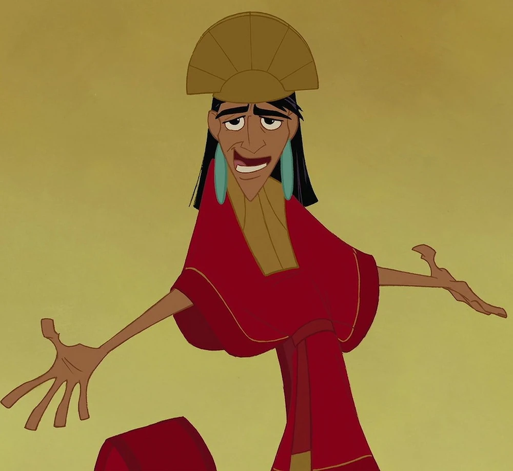

Emperor Kuzco is the protagonist of Disney's 2000 animated feature film The Emperor's New Groove. Known for his comically arrogant, saucy, and narcissistic personality, Kuzco is the ruler of the Kuzconian Empire in Peru. When his spoiled behavior gets him transformed into a talking llama, Kuzco slowly comes to realize the error of his ways.
Kuzco is already an emperor of his own kingdom of Kuzconian in Peru. He already knows how to rule amongst people whent they are starving and in need of help. With the way he rules, he probably won't care about how his people are living, but at least he gets the rich tax-cuts on private jets. Jokes aside, in the movie he does learn his lesson about how to rule a kingdom, and in the end actually cares. So the campaign will be for post-llama Kuzco, and with his humor and his kindess he'd make a pretty good ruler.
Kuzco and Pacha would prodvide free summer homes for every village, including a mansion with games, a water slide and pool, a train, and great view. This would also include making the llama the kingdom's mascot and will be treated with respect. Citizens will also get their own llamas and a free meal at Kronk's diner.